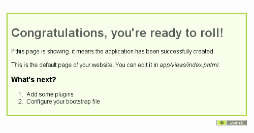

Vous entendez beaucoup parler, ces derniers temps, des frameworks PHP : CakePHP il y a environ un an et, récemment, Symfony, vers lequel votre site préféré est en train de migrer. Pourtant, le monde des frameworks PHP ne se limite pas à ces deux mastodontes. Il en existe beaucoup d'autres, certains très complets (comme les deux sus-cités), et d'autres bien plus minimalistes.
Parmi cette foultitude de frameworks, je vais vous présenter Atomik Framework, un framework léger, rapide, et développé par un français, Maxime Bouroumeau-Fuseau.
Pour partir de zéro, définissons un framework. Il s'agit d'un morceau de code qui offre une structure de base à un projet. Un framework contient donc généralement une architecture de fichiers imposée, des fichiers de configuration, un ensemble de règles de développement à respecter et des outils accessibles au cœur du projet.
Ce tutoriel n'a pas pour but de vous apprendre ce qu'est précisément un framework, mais de vous initier facilement et rapidement à l'utilisation d'Atomik.
Atomik est donc un framework PHP, c'est-à-dire qu'il vous fournit un cadre et des outils pour vos projets de sites ou de services web. Voici ses principales caractéristiques :
particulièrement léger ;
PHP 5, orienté objet ;
de base, peu de fonctionnalités (le strict nécessaire) ;
un système de plugin simple et efficace.
Attention : je ne recommande pas l'utilisation d'Atomik pour tous vos projets. Comme pour tout outil, il faut peser le pour et le contre. Atomik est un framework léger, mais cela implique que beaucoup de fonctionnalités avancées qui s'avèreraient très utiles dans le cadre d'un site web évolué ne sont pas présentes. Je recommande donc l'utilisation d'Atomik pour le développement rapide de sites web petits à moyens. Par exemple, Programmateur utilise Atomik, de même que mon programme de Machine de Turing.
Sur le site Absilia, que j'ai en grande partie développé, j'ai senti les limites d'Atomik, notamment pour tout ce qui concerne les accès complexes à la base de données. Je vous recommande donc de faire bien attention à vos besoins, et à choisir votre framework en fonction de ceux-ci.
Ben oui, sans les fichiers, il va être difficile d'utiliser notre framework... Première chose à faire donc, vous rendre sur le site officiel d'Atomik Framework. Et là, ça commence déjà à être sympathique : vous pouvez « customiser » votre distribution directement depuis le site ! Vous pouvez choisir d'ajouter des plugins au fichier ZIP de votre distribution, et ils seront intégrés directement à votre site. Rendez-vous donc dans la section Plugins, et choisissez les plugins qui vous intéressent en cliquant simplement sur « Add to my distribution ». En fonction de vos besoins, je vous recommande quelques plugins :
Si vous utilisez une base de données, ajoutez le plugin Db.
Si vous pensez utiliser plusieurs fichiers CSS sur chaque page et que vous vous souciez des performances, ajoutez Minifier (disponible dans les catégories All et Miscellaneous) (oui, c'est un plugin que j'ai développé :D ).
Si vous souhaitez utiliser la technologie Ajax, le plugin du même nom vous sera utile.
Et enfin, si vous comptez traduire votre site, ajoutez le plugin Lang.
Une fois votre liste de plugins établie, rendez-vous directement sur la page Download (sans passer par la case départ). Vous aurez ici plusieurs choix : soit télécharger la dernière version sans « customisation » (lien sur la gauche), soit continuer à préparer votre distribution. C'est ce que nous allons voir tout de suite.
Tout d'abord, vous devriez voir apparaître les plugins que vous avez précédemment choisi d'ajouter. Vous pouvez les supprimer si vous le souhaitez, ou bien passer à la suite.
Globalement, vous ne devriez pas avoir à changer les options par défaut proposées par Atomik. Vous apprendrez plus tard l'utilité de chacune d'entre elles ; pour l'instant, ce n'est pas nécessaire. Notez simplement que vous pouvez choisir d'ajouter automatiquement un framework JavaScript. Vous avez le choix entre les plus connus (jQuery, Mootools, YUI, ...), même si les versions ne sont pas forcément les dernières. Vous pouvez également activer le Google Content Network (aussi appelé Google AJAX Libraries API), c'est-à-dire que les fichiers de vos frameworks ne se trouveront pas sur votre serveur, mais seront téléchargés depuis les serveurs de Google. Il y a du pour et du contre ; je vous laisse vous forger votre propre idée.
Vous avez à présent terminé de préparer votre distribution. L'émotion est grande : ça y est, vous pouvez cliquer sur le bouton Download. Et nous allons passer à la prochaine partie...
Installer Atomik Framework devrait se révéler des plus simples... Il suffit d'extraire le fichier ZIP que vous venez de télécharger dans votre dossier web local (www/ ou htdocs/ ou autre, selon votre système). Je considère que vous savez faire cela ; si ce n'est pas le cas, il vaudrait mieux que vous suiviez une formation de base au développement web avant de continuer ce tutoriel ! :)
Pour des raisons de commodité, je vous invite à renommer le dossier atomik/ avec un nom correspondant à votre projet, comme par exemple un très original test/. Une fois que tout cela est fait, vérifions rapidement si tout fonctionne correctement. Accédez, via votre navigateur, au projet sur votre localhost (par défaut, l'URL devrait être http://localhost/le-dossier-de-votre-projet/). Voici ce que vous devriez voir :

Si ce n'est pas le cas, vérifiez que vous avez suivi les étapes dans l'ordre... :) Sinon, c'est que tout est O.K., et que nous allons donc pouvoir prendre en main la bête !
Dans sa version actuelle, Atomik Framework n'implémente pas l'architecture MVC, qui consiste en une séparation des trois couches affichage (vue), données (modèle) et actions (contrôleur). Cependant, la partie affichage est tout de même séparée de la gestion des actions et des données. Il y a donc deux éléments très importants dans la création d'un site avec Atomik : les views (vues) et les actions (actions et données). Pour faire simple, les vues représentent la partie HTML, tandis que les actions contiennent la partie PHP d'une page.
Chaque page de votre site devra donc posséder soit une vue, soit une action, soit les deux. Les fichiers vues se trouvent dans le dossier app/views/, et les actions dans le dossier app/actions/. Un exemple aide à comprendre, alors, exemplons. Créez dans le dossier app/views/ un fichier nommé hello.phtml. Voici le contenu de ce fichier :
<p>Hello World !</p>
Oui, c'est simple et classique. Accédez maintenant à cette page via l'adresse index.php?action=hello (précédée bien entendu de l'URL de base du projet, par exemple http://localhost/monprojet/). Vous devriez voir s'afficher une très jolie page blanche sur laquelle on peut lire « Hello World ! ».
Vous venez donc de créer votre première vue. Félicitations ! Ajoutons maintenant une petite touche supplémentaire, avec du PHP cette fois. Pour cela, créez un fichier hello.php dans le dossier app/actions/, et placez-y le contenu suivant :
<?php
$hello = 'Bonjour le monde !';
Vous devez maintenant vous douter qu'il va aussi falloir modifier notre fichier vue créé précédemment. Remplacez son contenu par celui-ci :
<p><?php echo $hello; ?></p>
Actualisez la page index.php?action=hello, et vous devriez voir son contenu s'afficher en français !
Bon, tout ceci était très simple, mais vous devriez avoir saisi les bases du fonctionnement d'Atomik Framework. Libre à vous maintenant d'ajouter des actions et des vues pour faire ce que vous souhaitez ! Toutefois, il vous faut encore explorer certains horizons d'Atomik, tant il peut vous faciliter le développement.
Commençons par reprendre clairement le fonctionnement de base d'Atomik. Chaque page de votre site doit obligatoirement être appelée par la page index.php. C'est le cœur d'Atomik qui gère les inclusions de vos actions et vues. Chaque page possède un nom unique, et c'est ce nom qu'on retrouve après action= dans l'URL. Ce nom doit donc correspondre aux noms donnés à la vue et à l'action associées. Par exemple, un formulaire de contact aura une action contact.php et une vue contact.phtml, et sera accessible via l'URL index.php?action=contact.
À la racine de votre projet Atomik, vous aurez remarqué deux dossiers : le dossier app/, que l'on vient d'évoquer, et un dossier assets/. Ce dernier va servir à contenir tous les fichiers « ressources » de votre site, c'est-à-dire les feuilles de style CSS, les scripts JavaScript, les images, etc. Le contenu de ce dossier est accessible en lecture par n'importe qui (heureusement !), ce qui n'est pas le cas du dossier app/ (heureusement aussi ; sinon, n'importe qui pourrait charger vos actions ou vues hors de leur contexte).
Maintenant que vous êtes plus familier avec Atomik, décrivons plus en détail son architecture :
app/ :: dossier contenant toute la partie « métier » de votre site.
actions/ :: dossier contenant les actions (fichiers *.php) de votre site.
plugins/ :: dossier contenant les plugins utilisables par Atomik.
views/ :: dossier contenant les vues (fichiers *.phtml) de votre site.
config.php :: fichier de configuration principal d'Atomik.
assets/ :: dossier contenant toutes les ressources de votre site.
css/ :: dossier contenant les feuilles de style CSS.
images/ :: dossier contenant les images.
js/ :: dossier contenant les fichiers JavaScript.
index.php :: fichier principal, toujours appelé, contenant le code d'Atomik.
Vous devez désormais être capable de vous repérer dans votre architecture de fichiers, et savoir où placer vos différents fichiers. Mais vous êtes encore loin de la maîtrise absolue de la Force...
Si vous avez regardé à l'intérieur du dossier app/views/, vous aurez remarqué deux fichiers déjà existants : index.phtml et _layout.phtml. Si le premier, évidemment, contient la vue de la page d'accueil, le deuxième est plus intrigant. Sachez donc que ce fichier _layout.phtml contient l'architecture HTML de vos pages ! Tout morceau de code HTML commun à chacune de vos pages se trouvera donc dans ce fichier. En fait, c'est un peu le même principe qu'avec le fichier index.php : il est toujours appelé, et c'est lui qui appelle les autres fichiers. Le fichier _layout.phtml, s'il n'appelle pas les autres vues, gère en revanche leur affichage.
Voici un exemple hyper-simplifié de layout :
<!DOCTYPE html>
<html>
<head>
<title>Titre</title>
</head>
<body>
<header><!-- Entête de mon site --></header>
<nav><!-- Navigation --></nav>
<?php echo $contentForLayout; ?>
<footer><!-- Pied de page --></footer>
</body>
</html>
L'instruction PHP echo $contentForLayout; insère le code HTML généré par la vue courante. Pour bien comprendre, regardez le fichier _layout.phtml de votre projet, ainsi que de votre vue hello.phtml, et comparez-les avec le code source de la page index.php?action=hello. Vous constaterez ainsi que le code de hello.phtml est bien inséré dans le code de _layout.phtml. Je vous laisse le soin de bidouiller le layout pour vous assurer que je vous dis bien la vérité. ;)
L'intérêt de tout framework, au-delà de l'architecture, c'est surtout qu'il fournit des outils pratiques, utiles, et facilitant grandement la vie du développeur. Atomik ne déroge heureusement pas à cette règle. Voici donc les quelques fonctions de base que vous vous devez de connaître en utilisant Atomik Framework.
Atomik::url
Cette fonction renvoie une URL correctement formatée. Si l'URL passée en paramètre est relative (c'est-à-dire qu'elle ne commence pas par http:// et est donc relative au site), elle est complétée avec l'URL de base du site. De plus, les paramètres suivants permettent de jouer sur les variables à passer en GET.
Sur le même modèle, ou presque, que la méthode url(), cette méthode prend une URL et crée une redirection HTTP vers cette adresse. L'équivalent d'un...
<?php
header('Location: adresse');
Exemple
<?php
Atomik::redirect('news?id=5&from=home');
Résultat
Ce code arrête l'exécution de la page en cours, et redirige vers la page suivante :
À la manière des méthodes de filtre disponibles depuis PHP 5.2, cette fonction vous permet de filtrer les données envoyées par vos utilisateurs. Cette fonction étant basée sur les fonctions natives de PHP (avec quelques apports), je vous invite à consulter la doc PHP sur le filtrage des données.
Voici maintenant une méthode très utile, puisqu'elle vous permet d'afficher des messages à vos utilisateurs de manière propre. Les messages sont stockés en session, et visibles au prochain affichage d'une page. Vous pouvez donc faire un flash(), puis une redirection ; le message sera affiché sur la prochaine page.
Le premier paramètre de cette fonction contient le message à afficher, et le deuxième permet d'attribuer une classe particulière au <li> qui contiendra le message. Vous pouvez ainsi facilement distinguer les messages d'erreurs des messages d'information.
Exemple
<?php
Atomik::flash('Une erreur est survenue !', 'error');
Résultat
Ce code affichera, à la prochaine page affichée :
<li class="error">
Une erreur est survenue !
</li>
Cette méthode vous sera utile principalement pour afficher des images dans votre code PHTML. Elle renvoie un chemin propre vers une ressource de votre site, et prend en paramètre le chemin vers cette ressource depuis le dossier contenant le fichier index.php, donc généralement la racine.
Cette méthode a pour intérêt de vous assurer que les liens vers vos ressources sont corrects. Ainsi, si vous changez d'hébergement, de sous-dossier, ou quoi que ce soit, vous ne devriez avoir à changer que la configuration d'Atomik, sans avoir à vérifier tous vos liens. Il en va bien sûr de même pour les méthodes url() et redirect().
Jusqu'à maintenant, nous avons utilisé des adresses relativement laides, du genre index.php?action=hello. Avouez que ce n'est pas très sexy, et que vous préfèreriez obtenir de belles URL telles que monsite.com/contact ou encore monsite.com/hello/world/12. Il va donc nous falloir activer l'URL Rewriting (ou « réécriture d'URL »).
Pour mettre cela en application, il y a deux manipulations à faire. La première est simple : vous avez à la racine de votre projet un fichier htaccess. Renommez-le tout simplement en ajoutant un point au début, ce qui donne donc .htaccess. Notez que, sous Windows, vous devrez ouvrir le fichier avec un éditeur de texte comme Notepad++ et l'enregistrer sous, Windows n'étant pas l'ami des points en début de nom de fichier.
Deuxième chose, et cela va introduire la configuration : vous allez devoir modifier le fichier config.php situé dans le dossier app/. Ce fichier vous permet de configurer à loisir tout ce qui concerne Atomik. Il doit normalement au préalable être complété avec des configurations de base, notamment avec l'activation des plugins que vous avez ajoutés à votre distribution personnalisée. Mettons en place l'URL Rewriting, et je vous expliquerai ensuite plus en détail le fonctionnement de ce fichier.
Vous allez donc ajouter la ligne suivante :
'url_rewriting' => true,
... juste après les lignes...
'atomik' =>
array (
Vous pouvez ensuite charger la page http://localhost/monprojet/hello et constater que la page affichée est bien celle que vous aviez créée tout à l'heure ! De plus, si vous aviez ajouté un lien sur la page d'accueil en utilisant la méthode url(), ce lien pointera maintenant vers /hello, et non plus vers index.php?action=hello.
Vous venez de modifier votre première clé de configuration d'Atomik. En effet, une grande partie du comportement d'Atomik est paramétrable via ce système de clés. Toutes ces clés ont une valeur par défaut dans Atomik et, donc, si vous ne modifiez rien, tout fonctionne (pas forcément comme vous le souhaitez, mais cela fonctionne). Au chargement, Atomik va lire le fichier config.php, et modifier sa configuration en fonction de ce qu'il y lit.
Les clés peuvent être regroupées, grâce à un système de sous-clés. Si vous observez le fichier config.php, vous constaterez qu'il n'y a en fait que des sous-clés, les clés de base n'étant que des tableaux de clés. Ainsi, les sous-clés de « atomik » concernent la configuration du noyau, les sous-clés de « app » définissent la configuration de l'application, les clés de « styles » contiennent les fichiers CSS, etc.
Je ne vais pas vous décrire toutes les clés de configuration d'Atomik (cela fera, a priori, l'objet d'un prochain billet sur mon blog), mais je vais vous donner les moyens d'accéder aux clés et de les modifier, ainsi que les plus importantes à connaître.
Atomik::get
Vous pouvez à tout moment, dans votre code, accéder à n'importe quelle clé de configuration grâce à cette méthode get(). Son premier paramètre contient la clé, et elle vous renvoie la valeur de cette clé.
Dans le cas de sous-clés, vous devez préciser le chemin menant jusqu'à la clé. Par exemple, la sous-clé « url-rewriting » définie dans la clé « atomik » sera accessible via le chemin « atomik/url-rewriting ». Vous pouvez utiliser autant de niveaux de clés que vous le souhaitez, par exemple « site/config/twitter/login ».
De même, vous pouvez à tout moment modifier une clé, en spécifiant, en premier paramètre, le nom ou le chemin de la clé et, en deuxième, sa nouvelle valeur. Cette valeur peut d'ailleurs tout à fait être un tableau de clés.
Regardez le fichier config.php : tout est fait en utilisant la méthode set(), cela devrait vous donner un bon exemple d'utilisation possible.
Cette clé contient un tableau avec les chemins vers les fichiers CSS à inclure sur chaque page du site. Vous pouvez modifier cette clé dans vos actions pour ajouter des fichiers CSS en fonction de la page.
Clé « scripts »
Idem, mais pour les scripts JavaScript.
Clé « plugins »
Cette clé liste tous les plugins à charger sur votre site, et permet également de les configurer directement. Je vous invite à consulter la documentation des plugins pour ce faire.
Ce tutoriel s'achève ici. Le but était de vous apprendre à maîtriser les bases d'Atomik Framework, et j'espère que c'est le cas. Vous êtes bien entendu invité à laisser ici tous vos commentaires, critiques, questions et autres éclaircissements. Je m'efforcerai d'améliorer ce tuto en fonction de vos réactions.
Si ce tutoriel vous a convaincu et que vous souhaitez approfondir votre utilisation d'Atomik, la meilleure chose à faire est de lire le manuel disponible sur le site officiel. Il n'est disponible qu'en anglais, mais rédigé par un francophone, et il est tout à fait accessible pour quiconque ayant un minimum de niveau en développement PHP et en anglais.